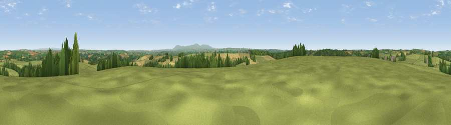

Brightmans Hill
#14232 in England · top 23% of its area beats it · near PetrockstoweThe view, rendered

A 360° render of this exact spot computed from the terrain model, tree cover and land cover — summer colours, afternoon light, calibrated against photographs of famous viewpoints. Real trees, hedges and buildings will differ in detail.
The panorama
Grey silhouette: terrain skyline in each direction (720 bearings, Earth curvature and refraction included). Dashed green: skyline with trees (+15 m) and buildings (+8 m) as obstacles. Blue strip: how far the ground is visible on each bearing.
Where the view opens
Wedge length = distance to the farthest visible ground on that bearing (vegetation-aware). Rings at 10, 25 and 50 km.
What fills the view
66% grassland · 20% cropland · 13% woodland ·
Angular shares of the visible panorama (visual magnitude), not map area. Landscape diversity 0.39 (0–1 Shannon).
Key numbers
More beautiful places nearby
The staircase of upgrades: each row has a higher view potential than everything closer. Driving times are estimates from straight-line distance, calibrated against real road routing — check an actual route before setting out.
| Place | Direction | Drive | Score |
|---|---|---|---|
| Viewpoint near Petrockstowe | SSE · 1 km | ~4 min | 65.5 |
| Viewpoint near High Bullen | NNE · 12 km | ~22 min | 71.2 |
| Viewpoint near Bideford | N · 15 km | ~27 min | 73.5 |
| Viewpoint near Parkham | NW · 17 km | ~30 min | 81.7 |
| Viewpoint near Bucks Mills | NW · 18 km | ~31 min | 84.0 |
| Viewpoint near Woolacombe | N · 32 km | ~49 min | 84.7 |
| Viewpoint near Combe Martin | NNE · 39 km | ~58 min | 86.9 |
| Viewpoint near Combe Martin | NNE · 39 km | ~58 min | 88.9 |
50.87256, -4.14675 · source: dobih hill · position refined by local search. Computed location — check access rights before visiting.